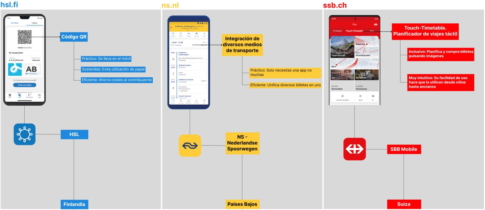
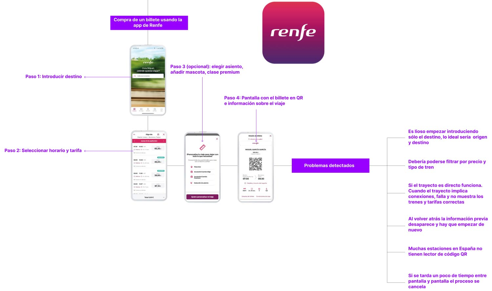
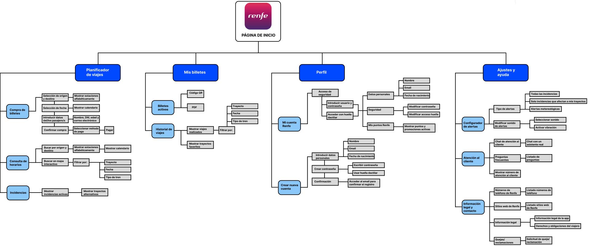
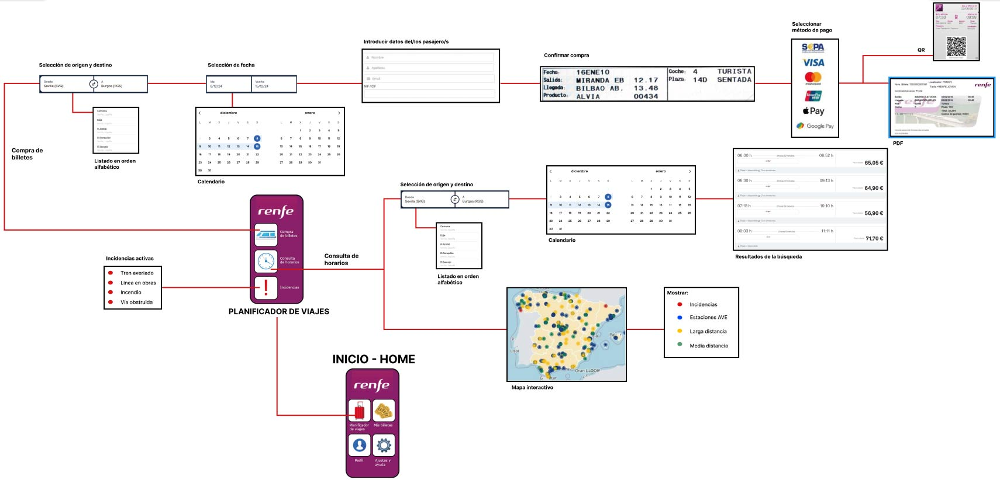

Mejorando la experiencia de usuario en el transporte ferroviario mediante investigación centrada en el usuario, wireframing y prototipado interactivo
La aplicación actual de Renfe presenta limitaciones en usabilidad e inclusividad. Los usuarios enfrentan fricciones en procesos básicos como compra de billetes, consulta de horarios y gestión de incidencias. La navegación carece de intuitividad y la arquitectura de información no está optimizada para las necesidades reales de los viajeros.
Crear una experiencia de usuario que simplifique los procesos existentes, mejore la accesibilidad para todos los públicos y optimice la eficiencia del servicio ferroviario. La pregunta guía fue: ¿Qué mejoras fomentan la comodidad de uso, la inclusividad, la sostenibilidad y la eficiencia del servicio?
Público amplio y diverso: viajeros frecuentes que priorizan eficiencia y rapidez, y usuarios ocasionales que buscan simplicidad y claridad. Especial atención a la inclusividad para personas con diferentes niveles de alfabetización digital y capacidades.
El proceso se estructuró en tres metodologías: inmersión digital en apps similares de países con mejores estándares ferroviarios (HSL de Finlandia, NS de Países Bajos, SBB Mobile de Suiza), identificando mejores prácticas en códigos QR e integración multimodal. Investigación empírica como usuario de la app actual, documentando fricciones y oportunidades. Entrevistas cualitativas con tres perfiles diferenciados que informaron la creación de User Personas y User Journeys, sintetizadas mediante Affinity Diagram.
La arquitectura se simplificó en cuatro categorías: Planificador de viajes (integra compra, horarios e incidencias), Mis billetes (QR, PDF, historial y favoritos), Perfil (datos personales y puntos Renfe), y Ajustes y ayuda (alertas personalizadas, chat, FAQ y documentación legal). El Card Sorting con usuarios validó que menos categorías con funciones claras mejora significativamente la navegabilidad.
Simplificar sin perder funcionalidad requirió múltiples iteraciones de wireframing. La nomenclatura intuitiva presentó retos, con términos como "Planificador de viajes" que demandaron ajustes semánticos. El sistema de alertas contextual prioriza incidencias relevantes con opciones personalizables. La accesibilidad digital fue prioritaria, considerando tamaños de toque, contraste y legibilidad en flujos críticos.
 Herramienta principal para wireframing, diseño de interfaces y creación del prototipo interactivo de alta fidelidad con más de 30 pantallas conectadas.
Metodologías de investigación cualitativa: entrevistas semiestructuradas, inmersión empírica, análisis competitivo y síntesis mediante Affinity Diagrams.
Creación de User Personas, User Journeys, escenarios de uso, arquitectura de información, Card Sorting y flujos de interacción documentados exhaustivamente.
Evaluación con usuarios reales mediante tareas específicas, cuestionarios post-test y análisis de hallazgos para iteración del diseño.